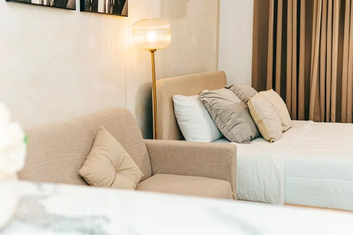

Trusted devices stay signed in. Ask Lloyd for access.
Older iPhone: tap Share at the bottom, then Add to Home Screen. It opens like an app and keeps you signed in.
This browser, inside another app, cannot add Cascade Staff to your Home Screen. Open it in Safari first, then follow the steps there.
If Safari does not open, tap Copy link, open Safari and paste it in the address bar.